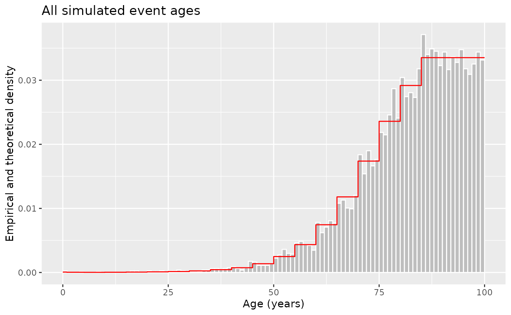
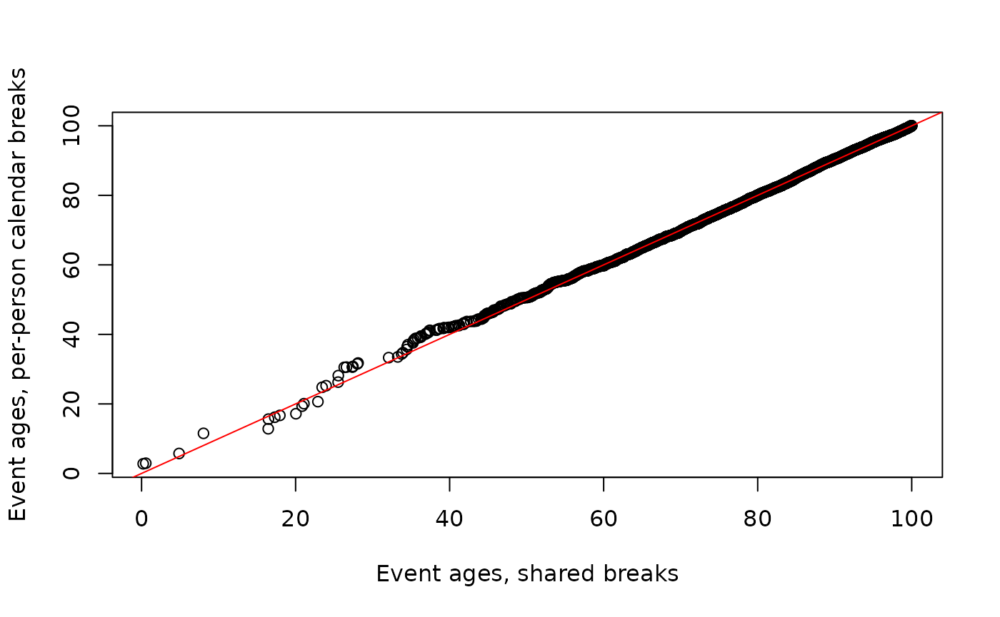

Step intensities over arbitrary intervals
TA Trikalinos
2026-08-21
Source:vignettes/Step_intensities_arbitrary_intervals.Rmd
Step_intensities_arbitrary_intervals.RmdWhat this vignette shows
The vectorized samplers for piecewise constant intensity functions,
vdraw_sc_step_regular() and its zero-truncated counterpart,
assume that the rate matrix columns correspond to equal-length
time intervals. vdraw_sc_step() and
vztdraw_sc_step() drop this assumption: the interval bounds
are passed in time_breaks, either once for all point
processes or separately for each one. Sampling remains exact – the
inversion algorithm does not care whether the intervals are equally
spaced.
This matters in practice because piecewise constant rates are rarely
published on equal-length intervals. The standard demographic and
epidemiologic convention uses age bands
,
five-year bands up to age
,
and a terminal open-ended band. With
vdraw_sc_step_regular() one has to expand such rates to a
fine regular grid (feasible here, with integer bounds, but wasteful;
impossible exactly when the bounds are not commensurate). With
vdraw_sc_step() the published bands are used as-is.
We showcase the new functions and then do a small timing study against the regular-grid sampler.
Simulation description
Assume a population of individuals indexed by . Each is subject to an age-specific disease incidence , where is a step function over the standard age bands and is a person-specific multiplier (frailty) with , so that .
library(nhppp)
age_breaks <- c(0, 1, seq(5, 85, by = 5), 100) # M + 1 = 20 bounds
lambda_bands <- c(
0.5, 0.3, 0.2, 0.3, 0.5, 0.8, 1.2, 2, 3.5, 6,
11, 20, 35, 60, 95, 140, 190, 235, 270
) / 10^5 # rates per person-year, one per band
w <- stats::rgamma(K, shape = 5, rate = 5)
lambda_matrix <- outer(w, lambda_bands) # K x MThe expected number of events over a full life course is , so most people have no event and few have more than one.
Sampling with shared interval bounds
When all point processes share the same interval bounds,
time_breaks is a vector with
ncol(lambda_matrix) + 1 increasing values. Each row of the
returned matrix holds the (ordered) event times of one point process;
rows with fewer events than the widest row are padded with
NA.
Z <- vdraw_sc_step(
lambda_matrix = lambda_matrix,
time_breaks = age_breaks
)
dim(Z)
#> [1] 100000 3
mean(!is.na(Z[, 1])) # proportion of people with at least one event
#> [1] 0.0769As with the other vdraw_*() functions,
Lambda_matrix (cumulative intensities at the interval ends)
can be given instead of lambda_matrix, and the truncation
options work the same way: report_first_K /
report_last_K report only the earliest or latest K events
of a realization; generate_at_least_K /
generate_at_most_K condition the sampled process on its
number of events; and budget_cap caps the computational
event budget.
The sampled times follow the target intensity
Pooled over people, the expected density of event ages is proportional to – the frailties scale the counts, not the shape. The histogram of all simulated event ages should match , a step function. It does; there is no approximation at play.
if (nchar(system.file(package = "ggplot2")) > 0) {
library(ggplot2)
t_events <- as.vector(Z)
t_events <- t_events[!is.na(t_events)]
dens_bands <- lambda_bands / sum(lambda_bands * diff(age_breaks))
step_df <- data.frame(
age = age_breaks,
density = c(dens_bands, dens_bands[length(dens_bands)])
)
ggplot() +
geom_histogram(
aes(x = t_events, y = after_stat(density)),
breaks = 0:100, fill = "gray", color = "white"
) +
geom_step(
data = step_df, aes(x = age, y = density),
direction = "hv", color = "red"
) +
labs(
x = "Age (years)",
y = "Empirical and theoretical density",
title = "All simulated event ages"
)
}
Per-process interval bounds
time_breaks can also be a matrix with one row of bounds
per point process. The rows of lambda_matrix still refer to
the same bands – but each band is located at different times for
different people.
A natural example: simulate in calendar time rather than age. If person is born in year , their age bands correspond to the calendar intervals We pass those directly.
birth_year <- stats::runif(K, min = 1920, max = 2000)
calendar_breaks <- outer(birth_year, age_breaks, FUN = "+") # K x (M + 1)
Z_cal <- vdraw_sc_step(
lambda_matrix = lambda_matrix,
time_breaks = calendar_breaks
)
range(Z_cal, na.rm = TRUE) # calendar years, not ages
#> [1] 1943.301 2098.667Subtracting each person’s birth year recovers event ages with the same distribution as before (different draws, same process):
age_at_event <- as.vector(Z_cal - birth_year) # birth_year recycles down columns
qqplot(
as.vector(Z), age_at_event,
xlab = "Event ages, shared breaks",
ylab = "Event ages, per-person calendar breaks"
)
abline(0, 1, col = "red")
Subintervals and first events
The rate information often spans a wider interval than the one to be
sampled. With t_min and t_max (scalars or
vectors), events are drawn only in (t_min, t_max], without
rebuilding the rate matrix. Here we draw each person’s first
event between study entry at age 40 and a person-specific exit age
:
T1 <- stats::runif(K, min = 60, max = 100)
t_first <- vdraw_sc_step(
lambda_matrix = lambda_matrix,
time_breaks = age_breaks,
t_min = 40,
t_max = T1,
report_first_K = 1
)
summary(as.vector(t_first))
#> Min. 1st Qu. Median Mean 3rd Qu. Max. NAs
#> 40.24 67.17 75.87 75.06 84.01 99.06 96808Zero-truncated sampling
vztdraw_sc_step() – equivalently
vdraw_sc_step(generate_at_least_K = 1) – conditions on at
least one event in the sampled interval. This is the natural tool when
simulating people who are known to become cases, e.g., drawing an age at
diagnosis for each of
cases:
t_dx <- vztdraw_sc_step(
lambda_matrix = lambda_matrix,
time_breaks = age_breaks,
t_min = 40,
t_max = T1,
report_first_K = 1,
generate_at_least_K = 1
)
sum(is.na(t_dx)) # everyone has an event now
#> [1] 0Timing study
How much does the extra generality cost? On a regular grid the
sampler maps a time to its interval with one division; on arbitrary
bounds it needs a binary search over the breaks. And the band
representation is more compact:
columns instead of the
one-year columns that vdraw_sc_step_regular() would need to
represent the same step function exactly. (A one-year grid works here
because the band bounds are integers. With non-commensurate bounds no
regular grid is exact.)
We compare four exact ways to sample the same process, on point processes:
-
vdraw_sc_step(), the bands, sharedtime_breaksvector; -
vdraw_sc_step(), the bands, per-rowtime_breaksmatrix (identical rows, to isolate the cost of per-row bounds); -
vdraw_sc_step(), the same step function expanded to a one-year grid ( columns), to isolate the cost of the binary search at equal width; -
vdraw_sc_step_regular()on the one-year grid – the only exact option beforevdraw_sc_step()existed.
First check that methods 3 and 4 are not just distributionally equal: on a regular grid the general kernel consumes the random-number stream exactly like the regular kernel, so the same seed gives the same draws (up to floating-point roundoff in the internal construction of the cumulative intensities).
K2 <- 10^4
lam_bands_2 <- lambda_matrix[1:K2, ]
lam_grid_2 <- lam_bands_2[, rep(seq_along(lambda_bands), times = diff(age_breaks))]
dim(lam_grid_2)
#> [1] 10000 100
set.seed(2026)
Z_general <- vdraw_sc_step(
lambda_matrix = lam_grid_2, time_breaks = 0:100
)
set.seed(2026)
Z_regular <- vdraw_sc_step_regular(
lambda_matrix = lam_grid_2, rate_matrix_t_min = 0, rate_matrix_t_max = 100
)
all.equal(Z_general, Z_regular, tolerance = 10^-12)
#> [1] TRUENow the timings: median elapsed seconds over R = 10
replications. (The absolute numbers depend on the machine that rendered
this document; the relative comparisons are what matter.)
median_elapsed <- function(f, R = 10) {
stats::median(
vapply(seq_len(R), function(i) system.time(f())[["elapsed"]], numeric(1))
)
}
breaks_rowwise <- matrix(rep(age_breaks, each = K2), nrow = K2)
timing <- data.frame(
method = c(
"vdraw_sc_step, bands, shared breaks",
"vdraw_sc_step, bands, per-row breaks",
"vdraw_sc_step, one-year grid",
"vdraw_sc_step_regular, one-year grid"
),
columns = c(19, 19, 100, 100),
seconds = c(
median_elapsed(function() {
vdraw_sc_step(lambda_matrix = lam_bands_2, time_breaks = age_breaks)
}),
median_elapsed(function() {
vdraw_sc_step(lambda_matrix = lam_bands_2, time_breaks = breaks_rowwise)
}),
median_elapsed(function() {
vdraw_sc_step(lambda_matrix = lam_grid_2, time_breaks = 0:100)
}),
median_elapsed(function() {
vdraw_sc_step_regular(
lambda_matrix = lam_grid_2,
rate_matrix_t_min = 0, rate_matrix_t_max = 100
)
})
)
)
knitr::kable(timing, digits = 4)| method | columns | seconds |
|---|---|---|
| vdraw_sc_step, bands, shared breaks | 19 | 0.002 |
| vdraw_sc_step, bands, per-row breaks | 19 | 0.004 |
| vdraw_sc_step, one-year grid | 100 | 0.010 |
| vdraw_sc_step_regular, one-year grid | 100 | 0.010 |
Three observations:
- The dominant cost is the width of the rate matrix: both samplers spend most of their time constructing cumulative intensities column by column. Sampling the bands directly is a few times faster than either sampler on the expanded -column grid – and the rate matrix is about a fifth of the size.
- The generality is not free. At equal width (methods 3 vs 4), the
general kernel pays for the binary search over the breaks (instead of a
division) and for reconstructing event times from the breaks; on our
machines it takes roughly
times as long as the regular kernel. When the grid really is regular,
vdraw_sc_step_regular()remains the faster choice. - Per-row
time_breaks(method 2) cost little more than a shared vector. Note that a shared vector (or, equivalently, a 1-row matrix) is not replicated internally: the C++ kernel reads the single row of bounds for every point process, so there is no hidden allocation.
Bibliography
Trikalinos TA, Sereda Y. nhppp: Simulating Nonhomogeneous Poisson Point Processes in R. arXiv preprint arXiv:2402.00358. 2024 Feb 1.
Trikalinos TA, Sereda Y. The nhppp package for simulating non-homogeneous Poisson point processes in R. PLoS One. 2024 Nov 21;19(11):e0311311.
Since the publication of the paper, the syntax and options of the
nhppp package have evolved. To reproduce the code in the
paper, you have to install the version of nhppp used in the
paper. Alternatively, take a look at the vignettes, which are written to
work with the current package.